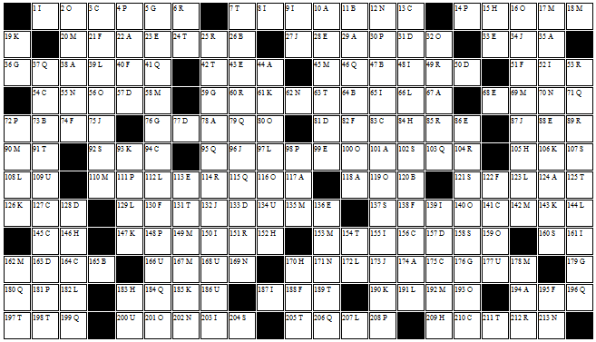

A. Stewart show, with "The" (2 wds.)
___ ___ ___ ___ ___ ___ ___ ___ ___ ___ ___ ___ ___ ___
67 29 22 118 78 35 174 38 124 101 194 10 44 117
B. Increase in a USPS price in 2011 (2 wds.)
___ ___ ___ ___ ___ ___ ___
120 26 47 11 73 165 64
C. Daytime deli
___ ___ ___ ___ ___ ___ ___ ___ ___ ___ ___ ___
3 141 13 54 210 164 145 94 83 156 175 127
D. Like a good pupil
___ ___ ___ ___ ___ ___ ___ ___ ___
57 133 31 50 128 81 77 163 157
E. Deserving of wider notice
___ ___ ___ ___ ___ ___ ___ ___ ___ ___
136 68 43 99 28 33 113 23 88 86
F. Chardonnay and champagne (2 wds.)
___ ___ ___ ___ ___ ___ ___ ___ ___ ___
195 122 21 40 74 82 130 188 138 51
G. Girly
___ ___ ___ ___ ___ ___
5 59 179 76 36 176
H. Uranium-235 is missing 3
___ ___ ___ ___ ___ ___ ___ ___
15 152 105 209 146 183 84 170
I. Philosopher's stone (3 wds.)
___ ___ ___ ___ ___ ___ ___ ___ ___ ___ ___ ___
8 161 52 9 150 139 187 155 48 65 1 203
J. Ceasefire
___ ___ ___ ___ ___ ___ ___
132 34 27 96 75 87 173
K. Opponents of Answer M, for example
___ ___ ___ ___ ___ ___ ___ ___ ___
143 185 190 126 106 147 93 61 19
L. Panic attack problem (2 wds.)
___ ___ ___ ___ ___ ___ ___ ___ ___ ___ ___ ___
108 112 207 39 144 182 172 191 97 123 66 129
M. Quarterback protectors (2 wds.)
___ ___ ___ ___ ___ ___ ___ ___ ___ ___ ___ ___ ___ ___ ___ ___
167 110 153 162 178 20 69 192 90 45 142 17 18 58 135 149
N. Grave arcade message (2 wds.)
___ ___ ___ ___ ___ ___ ___ ___
70 12 62 213 55 202 171 169
O. It is sometimes indicated with a white arrow (3 wds.)
___ ___ ___ ___ ___ ___ ___ ___ ___ ___ ___ ___
2 159 116 119 16 32 140 100 56 193 201 80
P. They may make Sandra sad?
___ ___ ___ ___ ___ ___ ___ ___ ___
4 148 181 208 72 98 111 30 14
Q. In all directions (3 wds.)
___ ___ ___ ___ ___ ___ ___ ___ ___ ___ ___ ___ ___
196 184 115 95 41 46 71 206 103 79 37 180 199
R. Like the life of the party
___ ___ ___ ___ ___ ___ ___ ___ ___ ___ ___
25 53 114 151 60 49 212 89 85 104 6
S. Saying a hail Mary
___ ___ ___ ___ ___ ___ ___ ___
137 158 204 107 121 160 102 92
T. Fun and games
___ ___ ___ ___ ___ ___ ___ ___ ___ ___ ___ ___ ___
24 197 42 91 211 125 63 154 131 7 189 205 198
U. Declines
___ ___ ___ ___ ___ ___ ___
186 134 166 168 109 177 200